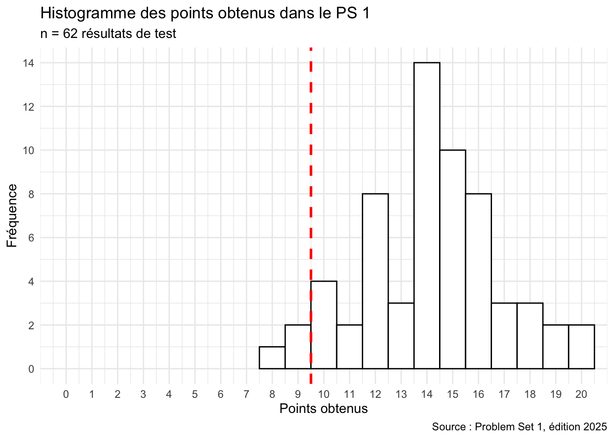

3 Révision 1 : bases de R
ImportantObjectifs d’apprentissage
- Vérifier que vous maîtrisez les notions des chapitres 1 et 2 : objets, types, vecteurs, matrices, tableaux de données et facteurs.
- Repérer, grâce aux explications, les notions à revoir.
- S’exercer sur des problèmes plus ouverts avec les questions avancées (facultatif).
Ce chapitre ne présente pas de nouvelle notion : il reprend les chapitres 1 et 2 sous forme de questions. Répondez sans relire les chapitres, puis lisez l’explication de chaque réponse, surtout lorsque vous vous êtes trompé·e.
Dans le cours, le Problem Set 1 était un test sur Moodle portant sur les chapitres 1 et 2. Les questions ci-dessous en reprennent le contenu, avec la correction et une explication pour chaque réponse.
Mise en gardeContexte : résultats de l’édition 2025 du cours
62 étudiant·es ont passé ce test (20 points au maximum, 10 pour réussir). La moyenne était de 14,2 points et 95 % des étudiant·es l’ont réussi.
ImportantEn bref
- Si les types de données ou les vecteurs vous posent problème, relisez la fin du chapitre 1.
- Si l’extraction avec
[ ]ou$vous pose problème, relisez « Les matrices » et « Les tableaux de données » au chapitre 2. - Si les facteurs restent flous, relisez « Les facteurs » au chapitre 2.
- Les questions avancées présentent des fonctions utiles (
seq(),rep(),all.equal(), l’argumentna.rm) que vous retrouverez plus loin.
Au chapitre 4, vous installerez vos premiers packages et créerez vos premiers graphiques.
Exercices de révision
Ces questions reprennent le Problem Set 1.
Choisissez Vrai ou Faux, cochez une réponse ou tapez un nombre : la couleur indique tout de suite si votre réponse est correcte. Cliquez sur Explication pour voir la correction.
Question 3.1
Exécutez le code suivant, puis jugez chaque proposition :
n <- "079 123 45 67"
print(n)
class(n)Le code crée un objet numérique avec 10 éléments.
nest un objet de type caractère (character).nest un objet à un seul élément.Si l’on a créé correctement
ncomme décrit ci-dessus et que l’on exécuten * 2, on obtient un message d’erreur.Dans R, il n’est jamais utile de stocker des numéros sous forme de texte.
Les guillemets font de n une chaîne de caractères à un élément. Une opération arithmétique sur du texte (n * 2) produit une erreur.
e) Stocker des numéros de téléphone, codes postaux ou identifiants en texte est souvent utile : on ne calcule pas avec eux, et les zéros initiaux sont conservés.
Question 3.2
Exécutez le code suivant, puis jugez chaque proposition :
a <- c(0:15)
print(a)print(a)est une fonction qui affiche l’objetadans la console.Au lieu d’utiliser
print(a), on pourrait simplement afficher l’objetaen exécutant son noma.La fonction
print()dans R sert à imprimer le code R sur papier avec l’imprimante.Dans cet exemple de code,
aest une fonction R.Dans cet exemple de code, un vecteur nommé
cest créé.
print(a) affiche le contenu de l’objet a dans la console. En session interactive, taper simplement a a le même effet. a est un vecteur (pas une fonction), et c() est la fonction de concaténation qui le crée : aucun objet nommé c n’est créé.
Question 3.3
Exécutez le code suivant, puis jugez chaque proposition :
a <- c(1, 22, 8, -5)
print(a)
class(a)aest un vecteur.aest un objet R de type numérique.Le code crée un objet dans le volet Environment de RStudio.
Le code utilise la fonction de concaténation
c().
Toutes les propositions sont correctes : c() crée un vecteur numérique (class(a) renvoie "numeric"), et l’affectation <- le place dans l’environnement.
Question 3.4
Dans R, la fonction c() peut être utilisée pour concaténer des éléments afin de créer des vecteurs.
c() (pour combine / concaténer) assemble ses arguments en un vecteur.
Question 3.5
Le # permet d’insérer des commentaires dans un script, sans effet sur l’exécution du code.
Tout ce qui suit # sur une ligne est ignoré par R lors de l’exécution.
Question 3.6
Le code suivant crée un objet de type caractère (une chaîne de caractères) lorsqu’il est exécuté :
monstre <- "vampire"Les guillemets font de "vampire" une chaîne de caractères : class(monstre) renvoie "character".
Question 3.7
Dans R, l’opérateur d’affectation (<-) peut être utilisé pour créer des objets, tels que des objets à un seul élément, des vecteurs, des matrices et des tableaux de données.
<- assigne n’importe quel objet R à un nom : scalaire, vecteur, matrice, tableau de données, liste, etc.
Question 3.8
Dans quel volet de RStudio écrivez-vous et enregistrez-vous votre script R ?
Le script s’écrit et s’enregistre dans le volet Source (en haut à gauche) ; la console affiche le code exécuté et les résultats.
Question 3.9
Le logiciel RStudio, comme R, est un langage de programmation open source.
R est le langage de programmation. RStudio est un environnement de développement intégré (IDE) qui facilite le travail avec R, mais n’est pas un langage en soi.
Question 3.10
Exécutez le code suivant, puis jugez chaque proposition :
name <- c("Manny", "Sid", "Diego", "Ellie", "Peaches", "Scrat", "Rudy", "Buck")
species <- c("mammoth", "sloth", "sabertooth", "mammoth", "mammoth", "squirrel", "dinosaur", "weasel")
female <- c(FALSE, FALSE, FALSE, TRUE, TRUE, FALSE, FALSE, FALSE)
age <- c(30, 20, 35, 25, 7, 4, 100, 28)
weight <- c(5000, 80, 400, 4000, 1000, 1, 10000, 3)
ice_age_df <- data.frame(name, species, female, age, weight)
ice_age_dfLa colonne
female(« femelle ») du jeu de donnéesice_age_dfest de type logique (logical).Les unités statistiques du jeu de données
ice_age_dfsont les noms, les espèces, le genre (femelle), le poids et l’âge des animaux de l’ère glaciaire.L’unité statistique du jeu de données
ice_age_dfest un animal de l’âge de glace, avec n = 8 observations.Le jeu de données
ice_age_dfcontient des informations sur trois mammouths différents.Buck, l’écureuil, pèse 1 kg.
a) female est créé à partir d’un vecteur de TRUE/FALSE, donc de type logique.
b) Ce sont les variables (colonnes), pas les unités statistiques.
c) Chaque ligne correspond à un animal, soit 8 observations.
d) « mammoth » apparaît trois fois dans species (Manny, Ellie, Peaches).
e) Buck est une belette (weasel) de 3 kg. C’est Scrat, l’écureuil, qui pèse 1 kg.
Question 3.11
Exécutez le code suivant, puis jugez chaque proposition :
name <- c("Manny", "Sid", "Diego", "Ellie", "Peaches", "Scrat", "Rudy", "Buck")
species <- c("mammoth", "sloth", "sabertooth", "mammoth", "mammoth", "squirrel", "dinosaur", "weasel")
female <- c(FALSE, FALSE, FALSE, TRUE, TRUE, FALSE, FALSE, FALSE)
age <- c(30, 20, 35, 25, 7, 4, 100, 28)
weight <- c(5000, 80, 400, 4000, 1000, 1, 10000, 3)
ice_age_df <- data.frame(name, species, female, age, weight)
print(ice_age_df)Le code
ice_age_df$nameaffiche les éléments de la colonnenamedu jeu de donnéesice_age_df.Le code
ice_age_df[, 2]affiche les éléments de la deuxième colonne deice_age_df.Les dimensions du jeu de données
ice_age_dfsont 8 × 5 (8 lignes et 5 colonnes).L’objet
ice_age_dfest une matrice (matrix).Le code
mean(ice_age_df$age)calcule la moyenne de la colonneagedu jeu de donnéesice_age_df.
a) et e) Le $ extrait une colonne par son nom ; mean() en calcule la moyenne.
b) Dans [lignes, colonnes], laisser les lignes vides sélectionne toutes les lignes de la 2ᵉ colonne.
c) dim(ice_age_df) renvoie 8 5.
d) class(ice_age_df) renvoie "data.frame" : contrairement à une matrice, un tableau de données peut contenir des colonnes de types différents.
Question 3.12
Exécutez le code suivant, puis jugez chaque proposition :
m1 <- matrix(c(1:25), nrow = 5, byrow = TRUE)
print(m1)m1est une matrice de dimension 5 × 5 (5 lignes et 5 colonnes).Dans le code R ci-dessus, l’argument
byrow = TRUEspécifie que les valeurs de la matricem1sont remplies par ligne.m1est une matrice de type textuel.m1est une matrice à 24 éléments.Le code R ci-dessus ne fonctionne pas et génère un message d’erreur.
25 valeurs réparties sur 5 lignes donnent une matrice 5 × 5 de type numérique (integer), remplie ligne par ligne grâce à byrow = TRUE.
Question 3.13
Jugez chaque proposition concernant les fonctions R setwd() et getwd() :
Avec la fonction
setwd(), on peut définir le dossier de l’ordinateur dans lequel R lit et enregistre les fichiers.Les chemins d’accès aux dossiers que l’on doit spécifier comme arguments dans
setwd()diffèrent généralement entre différents ordinateurs.Vous ne pouvez pas utiliser R si vous ne spécifiez pas votre répertoire de travail.
Tous les objets (vecteurs, matrices, tableaux de données, etc.) créés dans une session R sont automatiquement enregistrés sous forme de fichiers dans le répertoire de travail.
Vous pouvez afficher votre répertoire de travail actuel dans une session R avec la fonction
getwd().
c) R a toujours un répertoire de travail par défaut : on peut l’utiliser sans appeler setwd().
d) Les objets vivent en mémoire (volet Environment). Ils ne sont écrits sur le disque que si on les exporte explicitement (p. ex. avec write.csv() ou save()).
Question 3.14
length() est une fonction de R qui permet de compter le nombre d’éléments d’un vecteur. Utilisez-la pour calculer la longueur du vecteur v2 créé avec le code suivant :
v2 <- c(log10(100):501)Réponse :
log10(100) vaut 2, donc v2 contient les entiers de 2 à 501, soit 501 − 2 + 1 = 500 éléments.
Question 3.15
Calculez la valeur médiane d’un vecteur composé de nombres entiers consécutifs compris entre −66 et 702.
Réponse :
median(-66:702)La suite de −66 à 702 comporte 769 valeurs. La médiane est la 385ᵉ valeur, soit −66 + 384 = 318.
Question 3.16
Exécutez le code suivant pour créer v1. Ensuite, avec votre propre code, calculez la variance de v1.
v1 <- c(1:104)Réponse :
var(v1)Pour les entiers de 1 à n, la variance (d’échantillon) vaut n(n + 1) / 12 = 104 × 105 / 12 = 910.
Question 3.17
En statistique et en méthodes quantitatives en sciences sociales, c’est une convention de présenter les données dans des tableaux avec les unités statistiques (personnes, documents, cas, etc.) en lignes et les variables en colonnes.
C’est la convention des données « tidy » : une ligne par observation, une colonne par variable.
Question 3.18
La variable genre, par exemple pour les participant·es à une enquête, est généralement utilisée comme facteur ordonné dans R.
Le genre est une variable nominale : ses modalités n’ont pas d’ordre. On l’encode donc comme facteur simple, pas comme facteur ordonné.
Question 3.19
Si vous disposez d’un échantillon de 100 T-shirts et que chaque T-shirt est soit petit, soit moyen, soit grand, la variable taille de T-shirt peut être considérée comme une variable catégorielle ordinale.
Les modalités « petit », « moyen », « grand » sont des catégories qui ont un ordre naturel : il s’agit donc d’une variable ordinale (dans R, un facteur ordonné).
Question 3.20
En statistique et en méthodes quantitatives des sciences sociales, il est de convention de placer chaque observation dans une colonne différente d’un tableau de données.
C’est l’inverse : les observations sont en lignes, les variables en colonnes.
Questions avancées
Ces questions ouvertes n’ont pas de correction automatique. Essayez d’abord dans RStudio, puis comparez avec la solution proposée.
Question 3.A1
Écrivez une expression R vectorisée pour calculer la somme des nombres pairs de 1 à 100. Quel résultat obtenez-vous ?
Résultat :
sum(seq(from = 2, to = 100, by = 2))
# ou :
x <- 1:100
sum(x[x %% 2 == 0])Les 50 nombres pairs de 2 à 100 ont une moyenne de 51, d’où 50 × 51 = 2550. Aucune boucle n’est nécessaire, car seq(), %% et sum() opèrent sur tout le vecteur.
Question 3.A2
On considère v <- seq(from = 0, to = 1, length.out = 11).
- Que renvoie
v[5]? vest-il identique àc(0, 0.1, 0.2, ..., 1)? Comparez avecidentical()etall.equal().
v <- seq(from = 0, to = 1, length.out = 11)
v[5] # 0.4 (5e élément ; l'indexation commence à 1)
w <- c(0, 0.1, 0.2, 0.3, 0.4, 0.5, 0.6, 0.7, 0.8, 0.9, 1)
all.equal(v, w) # TRUE
identical(v, w) # FALSE
v == w # quelques FALSELes valeurs sont « les mêmes » à l’œil, mais certains nombres décimaux comme 0,3 ne peuvent pas être représentés exactement en binaire. seq() les calcule (0 + 3 × 0,1), alors que c() reprend les littéraux : de minuscules écarts d’arrondi apparaissent. Pour comparer des nombres décimaux, utilisez all.equal() plutôt que == ou identical().
Question 3.A3
Créez un vecteur logique de longueur 20 alternant TRUE, FALSE, … (en commençant par TRUE), sans boucle. Puis extrayez les éléments situés aux positions impaires.
x <- rep(c(TRUE, FALSE), times = 10)
length(x) # 20
x[seq(1, 20, by = 2)] # positions impaires
x[c(TRUE, FALSE)] # astuce : le vecteur logique est recyclérep() répète un motif. Pour l’extraction, un vecteur d’indices (seq()) ou un vecteur logique recyclé fonctionnent tous les deux.
Question 3.A4
Construisez un tableau de données df avec une colonne A contenant les nombres de 1 à 5 et une colonne B contenant leurs carrés. Quelle commande renvoie l’élément de la 4ᵉ ligne et de la 2ᵉ colonne, et quelle est sa valeur ?
Valeur :
df <- data.frame(A = 1:5, B = (1:5)^2)
df[4, 2] # 16
df$B[4] # équivalentQuestion 3.A5
tailles <- factor(c("S", "M", "L", "M", "S"),
ordered = TRUE,
levels = c("S", "M", "L"))- Convertissez
taillesen numérique (S → 1, M → 2, L → 3). - Quel piège faut-il connaître avec
as.numeric()appliqué à un facteur ?
as.numeric(tailles) # 1 2 3 2 1as.numeric() renvoie les codes internes du facteur, c’est-à-dire la position de chaque modalité dans levels. Ici, c’est exactement ce que l’on veut, car les niveaux sont dans l’ordre S, M, L.
Le piège : si les niveaux ne sont pas dans l’ordre voulu, ou si le facteur contient des nombres stockés comme texte, le résultat est trompeur :
f <- factor(c("10", "5", "20"))
as.numeric(f) # 1 3 2 (codes, pas les valeurs !)
as.numeric(as.character(f)) # 10 5 20Question 3.A6
m <- matrix(1:25, nrow = 5, byrow = FALSE)- Calculez la somme de la colonne 3 sans boucle.
- Extrayez la sous-matrice composée des lignes 2 à 4 et des colonnes 1 et 5.
sum(m[, 3]) # 65 (11 + 12 + 13 + 14 + 15)
m[2:4, c(1, 5)]
# [,1] [,2]
# [1,] 2 22
# [2,] 3 23
# [3,] 4 24Question 3.A7
Quelle est la différence entre class() et typeof() ? Donnez un exemple.
class() renvoie la classe de l’objet, c’est-à-dire la façon dont R et les fonctions le traitent. typeof() renvoie le type de stockage interne.
df <- data.frame(x = 1:3)
class(df) # "data.frame"
typeof(df) # "list" (un tableau de données est une liste de colonnes)
f <- factor(c("a", "b"))
class(f) # "factor"
typeof(f) # "integer" (les codes internes)Question 3.A8
x <- c(2, 4, NA, 8, 10)- Calculez la variance de
xen ignorant la valeur manquante. - Quel est le rôle de l’argument
na.rm?
var(x) # NA
var(x, na.rm = TRUE) # 13.33333Par défaut, toute valeur NA « contamine » le résultat. na.rm = TRUE (NA remove) demande à la fonction d’écarter les valeurs manquantes avant le calcul. Le même argument existe pour mean(), sum(), sd(), median(), etc.
Question 3.A9
En une ligne, utilisez getwd() et setwd() pour passer au dossier parent du répertoire de travail actuel.
setwd(dirname(getwd()))
# ou plus simplement :
setwd("..")dirname() retire le dernier élément d’un chemin. ".." désigne le dossier parent dans tous les systèmes d’exploitation.
Question 3.A10
Soit un tableau de données df avec une colonne numérique X. Ajoutez en base R une colonne Y qui contient les valeurs standardisées de X, soit Y = (X − moyenne(X)) / écart-type(X).
df <- data.frame(X = c(4, 8, 15, 16, 23, 42)) # exemple
df$Y <- (df$X - mean(df$X)) / sd(df$X)
df
# Vérification : mean(df$Y) vaut ~0 et sd(df$Y) vaut 1as.vector(scale(df$X)) donne le même résultat.